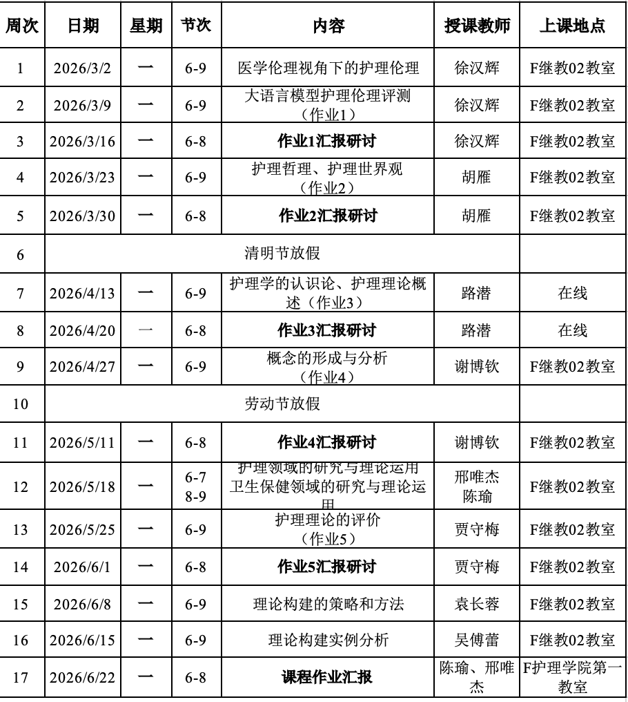

2026春 · NURS60008.01 · 徐汉辉、胡雁、谢博钦、邢唯杰、陈瑜、贾守梅、袁长蓉、吴傅蕾、路潜
来源：复旦教务系统教学大纲，本轮使用已授权账号下载。原始正文与考核信息；去除联系方式和网页脚本，内嵌图片按原字节去重保存。
本课程是护理学专业博士研究生核心课程之一，总体分为护理哲理、护理理论两部分。主要内容包括哲学理论、护理学发展及其哲学基础、护理的认识论与方法论、发展概念、评价和应用理论、构建理论。通过理论授课和研讨，希望帮助学生在哲学层面明确护理学的学科知识与方法的基础，以及护理实践的基础，形成理论分析、评价与构建的相关能力，能将护理理论熟练运用于护理实践、教育、研究和管理，能在相关研究领域初步构建理论框架。
This course is one of the core courses for doctoral students in nursing, divided into two parts: philosophical foundations of nursing and nursing theories. The main content includes philosophical theories, the development of nursing and its philosophical foundations, epistemology and methodology in nursing, conceptual development, theory evaluation and application, and theory development. Through lectures and seminars, the course aims to help students clarify the foundational knowledge, methods, and practice of nursing at a philosophical level, develop competence in theoretical analysis, evaluation, and development, apply nursing theories proficiently in nursing practice, education, research, and management, and construct preliminary theoretical frameworks in relevant research areas.
通过学习，学生应能够:
理论授课、汇报研讨
见进度表。

Fawcett J. Contemporary Nursing Knowledge: Analysis and Evaluation of Nursing Models and Theories. 3rd ed. F.A. Davis, 2012.
| 项目 | 比例 | 评定说明 |
|---|---|---|
| 作业/实验/实践Assignment | 75.0% | 每次作业15分，依据作业和PPT汇报的质量评分 |
| 课题论文Research Paper | 25.0% | 依据课程作业和PPT汇报的质量评分 |